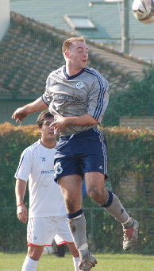
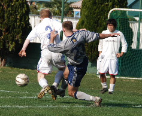
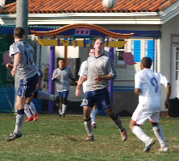
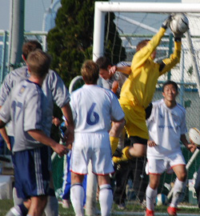
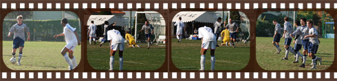

|
YC&AC, Sunday 2nd December,
"Maggie Thatcher, can you hear me? Maggie Thatcher, I have a message for you: Your boys took a hell of a beating!"
England losing to Norway in the WC Qualifiers was a shock back in 1981-it wouldn't be now of course- prompting the crazed outburst from some Norwegian whack-job. Possibly the 2nd most famous commentary about the footballing Brits in history (c'mon..."some people are on the pitch"....?)
Admittedly not much of a link, YCAC has more Brits than the BFC. No Scandinavians; a Swede last week but away this week. YCAC has never, to my knowledge at least, had a Norwegian. There was those 3 in Fenwicks on the HK tour but no, Al's right, think of the children
That BFCs loss to YCAC on Sunday registers as a shock at all, OK mildly pleasant surprise for The Hibs, Swiss, Sala and, particularly one suspects, The Vags, highlights the respective fortunes of the 2 clubs since their last meeting.
Since that 5-1 tonking on (I'm almost certain) March 31 when the 2 were neck and neck for the title, the Brits had (probably, I'd have to check) drawn once or twice and swept all else before them and YCAC (maybe, look it up if you will) had won just 2 out of 10 games. BFCs sprint took them to the TML4 title and a commanding position atop TML5. YCACs limp took them in the opposite direction from the summit to an uncomfortable mid table position both last season and this. Indeed the expected loss on Sunday would have left them precariously perched just above the 2 relegation places

That didn't happen though. It looked like it might at both 0-1 and 1-2 as YCAC conceded 2 depressingly familiar goals. An unhindered run from deep through 1/2 a pitch worth of space into the home penalty area resulted, eventually, in the 1st and then an unmarked header from close in as the whole team took an impromptu nap at a free kick for 1-2. That after Tom Taw had scored a bitchin' equaliser, curling one in from the edge of the box after the BFC defenders had failed to come out and challenge his run.
We haven't just ghosted Martin Peters-like past the BFC opener, we've shimmied, given it a huge swerve and left it sitting on its arse in the YCAC dust. We'll have to go back; its the most contentious 30 seconds in the game.
Attacker surges into the box, only the GK to beat. Sorry no prizes for what happened next or to whom. Penalty. Best case (BFC) outcome;1-0/home GK and angry young midfielder, for forcibly remonstrating with the attacker, both see red and YCAC have to play 60 minutes with 9 men. Actual case; 1-0/1 yellow card. Lucky escape for angry young midfielder? Absolutely. Brains of a rocking horse. Sympathy for the attacker? Always difficult when they manage to be holding the imaginary card aloft after the last roll but, yes, maybe. In the split second between contact being made by the GK, as he was beaten by ball and man, and triple-pike commencing, a conscious decision was made to take the penalty rather than chase the ball and stick it in the empty net. Is that his right? I guess so, maybe he thinks he might scuff his shot being unbalanced. No other reason a penalty is better than a goal in that situation, is there? We should ask Neil when he calms down
To be fair, a feature of the game, at least for those defenders astute enough to observe in safety from the sidelines, was the strong direct running with the ball by Messrs Taw (T), Masar and Yamagishi. Scary stuff indeed for those in the firing line and sometimes, I suppose, its bound to end in tears
The 2nd equaliser was from a Joe Takeda corner though. Partially cleared and volleyed goal-ward by Hide Yoshioka, Geoff Cook was just awake enough to help it on its way and claim a debut goal. Poor lad, over from HK for the weekend, hadn't had a winks sleep. Probably Big Match nerves.
Kita and Shoot might have had great games at fullback for YCAC but they dont read my reports so no point in going into it. Hide read the Swiss report. He must have done. He raced clear of a flat back line to face BFC Keeper Justin 1 on 1. "Oh shit, not again. I know, this week i'll try putting it over him" he may or may not have been thinking. Yippee. 3-2. BFC are on the ropes and its all over. Except it isn't ever all over for YCAC even when the Celts are down 3-0 and the count is at 8 1/2. Cue Neil to rub in the fact that hes still on the pitch, winning the ball in the centre of the park and threading it through to Hide up top, a look-away layoff catches Tom bursting down the wing. A first time daisy-cutter of a cross in that no-mans land between GK and retreating defender finds the only man capable of keeping up with Tom when hes bursting. Tyson Masar is on a burst all of his own and slides the ball in. The Return of the Prodigal Son. Played 3 with Tyson and won 2. Played 5 without him and won 1. Tosser

4-2 and an ultimately convincing win well earned by the new management team of skipper Dickie Philo and FootballManager Anthony Savage. With the exception of knee knacked Anthony that was as good a squad as YCAC can put out. If BFC were missing a few and didn't get the rub of the green at the key moment they got on with it anyway and did their bit in a cracking game. Take heart from the fact that the Norway defeat was just a blip for England in 81 and they recovered to do the business eventually
Watch out for those Hibs though. 6-1 vs the much improved Geckoes. Thats a good score
Report by Steve Taw
|